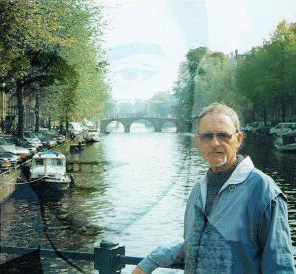

אזור ההנצחה
שלמה גולדשמיט
שלמה גולדשמיט נולד בשם אוטו גולדשמידט ב־30 בדצמבר 1939 באמסטרדם שבהולנד, להוריו וולטר גוסטב ופלה גולדשמידט. הוריו עזבו את גרמניה בשנות ה־30 כדי להימלט מרדיפת הנאצים. בזמן מלחמת העולם השנייה הוסתר שלמה אצל משפחה נוצרית בדרום־מזרח הולנד, בעוד הוריו הסתתרו באמסטרדם. לאחר המלחמה התאחד שוב עם הוריו, והמשפחה המשיכה את חייה באמסטרדם. בהמשך עלה לארץ, הקים משפחה, עבד, יצר, טייל והשאיר אחריו ארכיון עשיר של תמונות, סיפורים וציורים.
"אבא בגיל 68, צעיר מדי בכדי למות... היית לי אבא וגם חבר. היית אבא למופת, עם סבלנות אין־סופית, ועם טוב לב שלא רואים כמותו."— מתוך ההספד של יריב

קטגוריות חיים